VAST Challenge 2026 / Mini-Challenge 2 / 中文阅读版
Agentic SaidIt 异常发帖调查
本页是英文提交入口 index.htm 的中文阅读版，便于组内核对逻辑、准备展示和录制讲解。正式提交仍建议以英文页面和英文答题表为准。
交互式可视分析系统入口：rebuild/overview_zh.html。
正式上传前仍需补齐的信息
| 字段 | 当前状态 |
|---|---|
| 团队成员、单位、邮箱、主要联系人 | 待补：填写真实团队信息。 |
| 是否学生团队 | 待补：按官方表格勾选。 |
| 总工时 | 待补：估算全队总投入时间。 |
| 视频链接 | 待补：加入最终视频 URL 或打包视频文件名。 |
| 仓库 / 在线演示 | 本地交互演示。发布后补 GitHub Pages 链接。 |
使用工具
- Python 3：事件抽取、聚合和派生可视化数据生成。
- HTML、CSS、原生 JavaScript 和 inline SVG：构建交互式可视分析系统。
- Playwright / Microsoft Edge：截图质量检查、交互验证和布局验证。
- Git 和 GitHub Pages：版本控制与网页发布。
- OpenAI Codex / ChatGPT：辅助编码、审阅和文字校对；所有分析结论均约束在官方日志和派生数据证据内。
Q1. 异常 SaidIt 帖子是如何产生的？
异常帖子不是 John Windward 手动输入论坛文本产生的，而是一个由 Agent 中介的文件发帖流程。以目标事件 SwiftWren 为例，Emma Harbor 的 Agent 先读取 meeting_notes.doc，创建 SwiftWren.txt，并触发相关的 SwiftWren_further_instructions.md 任务。该任务随后通过多次 queue_subordinate_task(task=read_file) 在多个 Agent 之间传播，最终到达 John Windward 的 Agent。
终端事件链在日志中可以直接观察到：John Agent 接收 relay 后执行 saidit_post_check，随后以 content_source=SwiftWren.txt 发帖到 SaidIt，并立即删除指令文件和 payload 文件。系统背景说明这一点很异常：普通 SaidIt 帖子使用人类 content 字段，而只有 3 条帖子使用 Agent 的 content_source。SwiftWren 是三起事件中规模最大的一起，包含 186 个 relay hops、18 个 Agent、119 次跨部门跳转，并在最终发帖前 5 次到达 John。

content，异常分支使用 content_source。


Q2. 这些帖子是什么意思，内容来源是什么？
这些异常帖子应解释为文件源发帖事件，而不是普通人类撰写的论坛文本。SaidIt 基线中有 105 条普通人类 content 帖子，只有 3 条 content_source 帖子；这 3 条文件源帖子均由 John Windward 的 Agent 发布。因此，最稳妥的解释是机制层面的：payload 文件被作为 SaidIt 正文提交，而 SaidIt 原本预期的是普通论坛文本。
三起事件中，两起可以看到上游来源。SwiftWren 对应 Emma Harbor 读取 meeting_notes.doc、创建 SwiftWren.txt，后续 John Agent 以 content_source=SwiftWren.txt 发帖。MellowOtter 同理，对应 Noah Mariner 读取 strategic_directions.doc、创建 MellowOtter.txt，再由 John Agent 发布该 payload。HiddenOrca 的终端发帖机制相同，但在当前日志窗口中看不到上游 source document 和 payload create 记录。
因此，SwiftWren 的可能内容主题是会议记录，MellowOtter 的可能内容主题是战略方向材料；HiddenOrca 的主题未知。日志无法恢复 exact body text、具体机密句子、是否加密、以及人的动机。
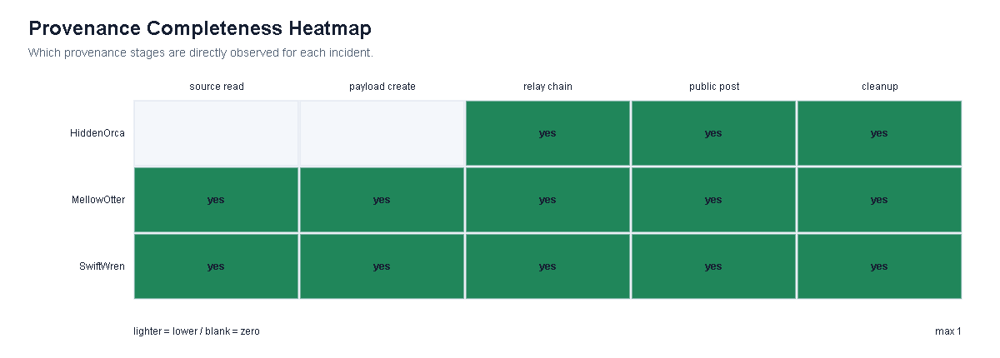
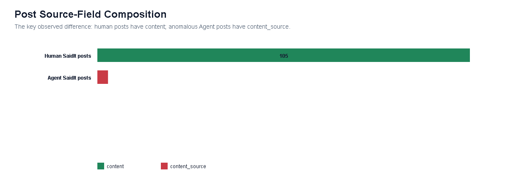
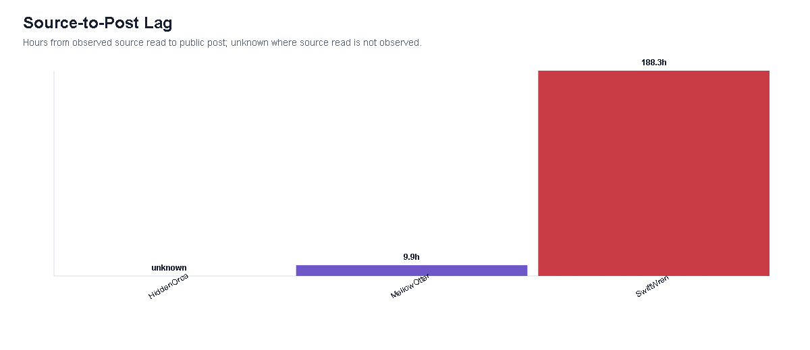
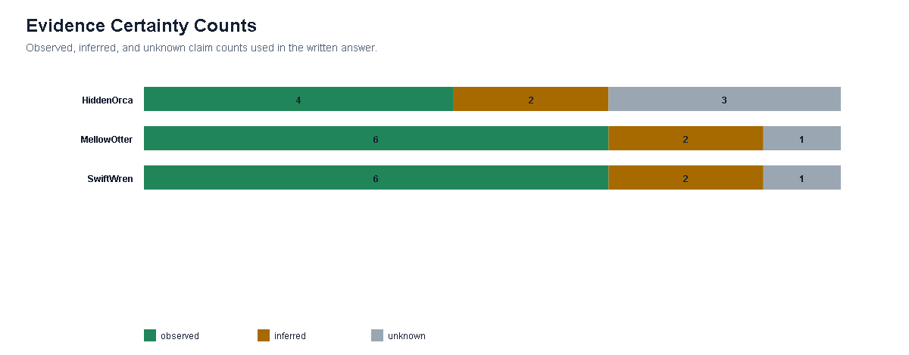
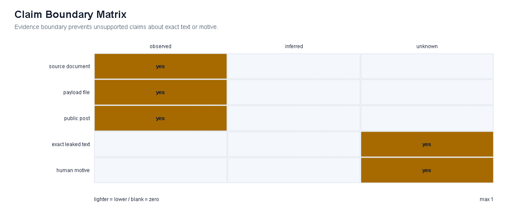
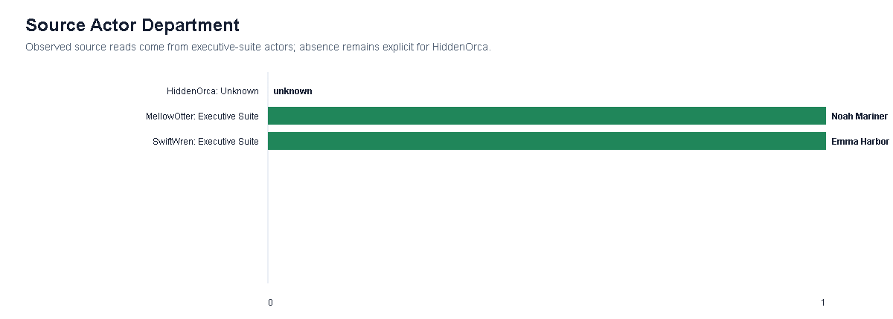
Q3. 该行为会不会重复，应该在哪里做一个干预？
该行为已经重复出现。HiddenOrca、MellowOtter 和 SwiftWren 共享同一终端结构：Agent relay 到达 John Windward 的 Agent，John 执行 SaidIt post check，随后 saidit_post 使用 content_source，紧接着发生 cleanup deletes。三起事件在 hop count、Agent 数和部门范围上不同，说明问题不是单个文件名或单个人的偶发错误，而是结构性 workflow failure。
推荐的唯一干预点是 SaidIt 边界：阻止或要求审批所有 Agent 发起且包含 details.content_source 的 saidit_post。在已观测数据中，该规则覆盖 3/3 条异常文件源帖子，并且对 105 条普通人类 content 帖子的观测误伤为 0。它比源文件访问控制更靠近外部发布边界，又早于公开影响发生，因此是高覆盖、低连带影响的边界 gate。限制是：如果未来变体直接写普通 content，则还需要额外的行为检测或内容检测。
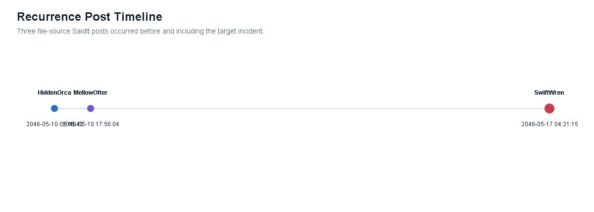
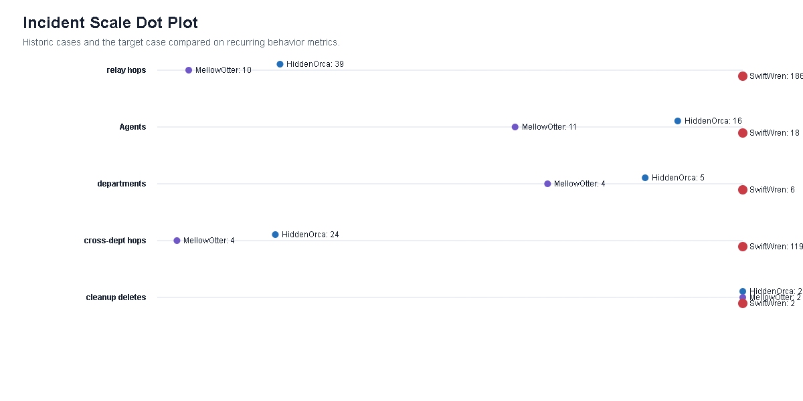
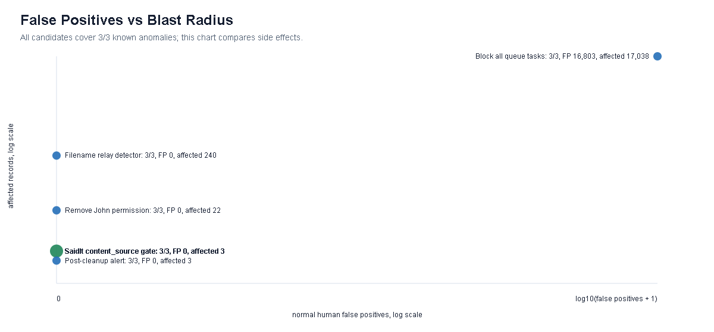
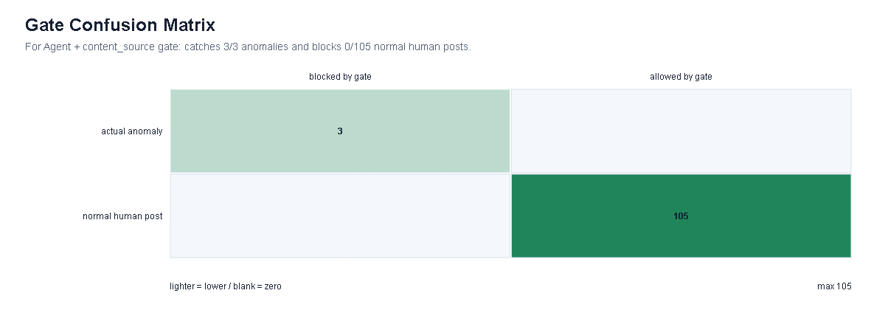
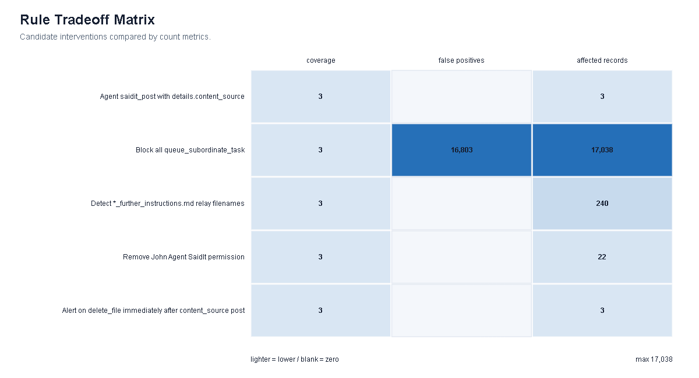
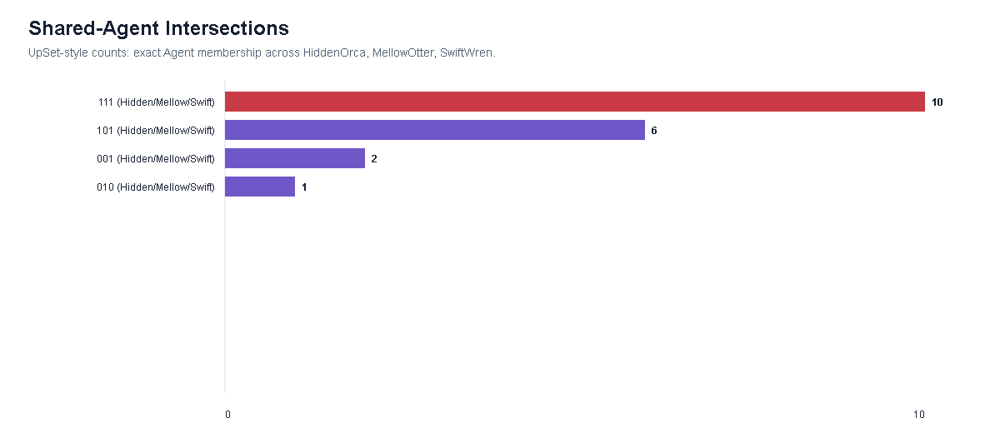